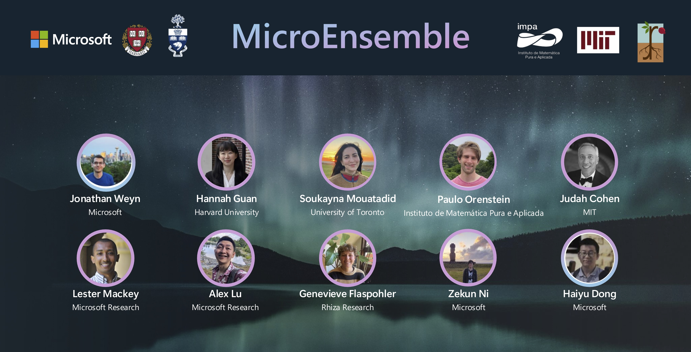

AI Weather Quest
Water and fire managers rely on subseasonal forecasts—forecasts of temperature, precipitation, and pressure two to six weeks in advance—to allocate water resources, manage wildfires, and prepare for droughts and other weather extremes. While short-term forecasting accuracy is largely sustained by physics-based dynamical models, these deterministic methods have limited subseasonal accuracy due to chaos. Indeed, subseasonal forecasting has long been considered a "predictability desert" due to its complex dependence on both local weather and global climate variables.
In August 2025, the European Centre for Medium-range Weather Forecasting (ECMWF), the leading subseasonal forecasting agency worldwide, launched a yearlong real-time forecasting challenge—the AI Weather Quest—to improve the accuracy of probabilistic subseasonal forecasts. To meet this challenge, we formed the MicroEnsemble, a team of scientists with complementary strengths in meteorology, engineering, statistics, and AI and a common passion for building solutions that benefit society.

Our approach to the Quest, Duet, combines two innovations: a Probabilistic Bias Correction (PBC) method that uses machine learning to systematically correct errors in forecasts and PoET, a transformer-based model for improving the skill of probabilistic forecast ensembles. When applied to dynamical forecasts from ECMWF, Duet boosts precipitation, temperature, and pressure predictive skills by over 200% and outperforms leading dynamical and machine learning alternatives.
For the September-October-November season, MicroEnsemble placed first in the AI Weather Quest for each target weather variable—temperature (tas), mean sea-level pressure (mslp), and precipitation (pr)—and each forecast horizon, outperforming the operational dynamical models of six government forecasting agencies, the in-house AI models of ECMWF, and the forecasting systems of 34 teams worldwide.


For more information on our subseasonal forecasting work, please see our AI Weather Quest slides or our project page.